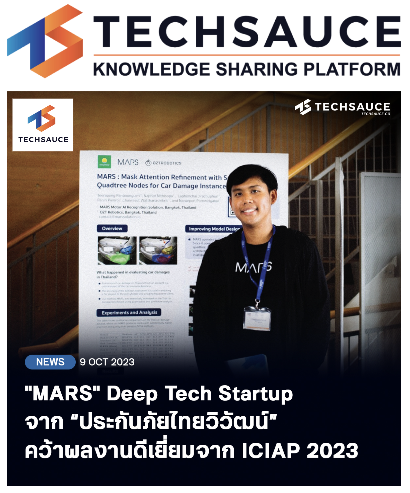
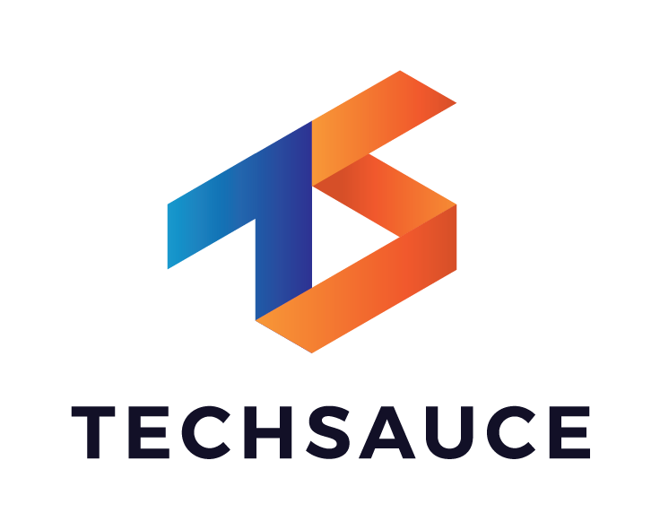
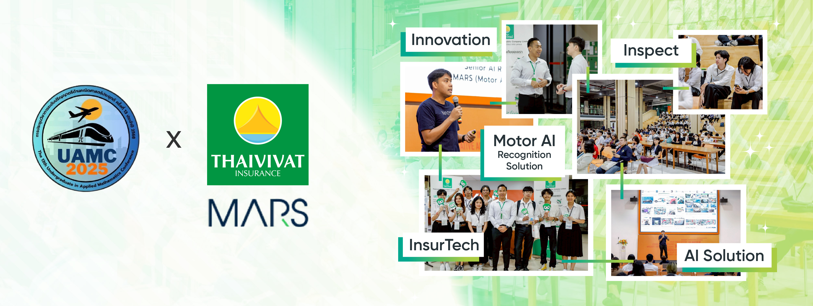

We build and train AI that truly understands the entire automotive
insurance ecosystem — from every scratch and component to every claim,
repair note, and document. Our models are designed to be ethical,
transparent, and fair, helping make car insurance smarter for everyone.
SCROLL
🚀 About MARS
MARS is a state-of-the-art deep learning model for car damage
instance segmentation.
It stands for:
M = Mask
A = Attention
R = Refinement
S = Sequential Quadtree Nodes
By leveraging sequential quadtree attention, MARS refines
segmentation masks at an instance level, surpassing existing methods
(Mask R-CNN, PointRend, Mask Transfiner) with notable maskAP gains.
+1.3 maskAP improvement (R50-FPN)
+2.3 maskAP improvement (R101-FPN) on Thai car-damage dataset
Presented at ICIAP 2023, Udine, Italy 🇮🇹
🏁 About MARSAIL Lab
MARSAIL (Motor AI Recognition Solution Artificial
Intelligence Laboratory) is dedicated to pioneering research at the
intersection of computer vision, transformers, and automotive AI.
Our mission is to revolutionize the automotive insurance and repair
industries through AI-driven automation, delivering breakthroughs in
segmentation, localization, and decision intelligence.
🕰️ MARSAIL Lab (2022 – 2026)
MARSAIL was built and developed over
4 years and 4 months, spanning from
2022 to 2026, as a dedicated research and innovation laboratory.
Throughout this period, the lab advanced
AI-driven automation for automotive insurance,
integrating computer vision, intelligent segmentation,
transformer architectures, and decision intelligence systems.
As of April 2026, MARSAIL stands as a
fully realized research chapter —
an independent AI initiative shaped by long-term vision,
technical precision, and an unwavering commitment to meaningful innovation.
— Dr. Teerapong Panboonyuen
Founder & Research Architect · January 2022 – April 2026.
✨ Visual Results
MARS delivers superior segmentation accuracy:
📰 Press & Media Coverage
MARSAIL’s research and real-world AI systems have received recognition
from
leading technology media, highlighting our ability to
translate top-tier academic research into
deployable, industry-grade innovation.


FEATURED NEWS · OCTOBER 2023
“MARS” Deep Tech Startup from Thaivivat Insurance Recognized at
ICIAP 2023
Techsauce featured MARS as a deep-tech startup
originating from Thaivivat Insurance, spotlighting
our award-winning research presented at the
International Conference on Image Analysis and Processing (ICIAP
2023). The coverage reinforces MARSAIL’s role in connecting
academic research with
production-scale AI deployment.
External media recognition reflects MARSAIL’s commitment to building
robust, trustworthy AI systems that meet both academic
and industrial standards.
📰 Press & Media Coverage
Our work has been featured by leading technology, finance, and business
media, reflecting strong external trust in MARSAIL’s real-world AI
research and deployment.
Independent media coverage provides external validation of MARSAIL’s
research quality, technical rigor, and industry relevance.
🎓 Invited Academic Talk
Beyond publications and media recognition, MARSAIL actively contributes
to the academic community through
invited talks that bridge
mathematical foundations, modern vision transformers,
and real-world insurance AI systems.

INVITED GUEST SPEAKER · 2025
The 13th Undergraduate in Applied Mathematics Conference (UAMC 2025)
Dr. Teerapong Panboonyuen was invited as a guest
speaker at UAMC 2025, delivering a talk titled
“Mathematics Foundations of Vision Transformer in Car Insurance
AI”. The session highlighted how
linear algebra, attention mechanisms, and optimization
theory
underpin modern Vision Transformers deployed in large-scale
automotive insurance systems.
These invited academic engagements reinforce MARSAIL’s mission to
translate
mathematical rigor into
trustworthy, production-grade AI
for automotive and insurance applications.
🧠 MARSAIL Research Highlights (2023–2026)
MARSAIL drives the next generation of automotive AI and intelligent
mobility through foundational transformer research led by
Dr. Kao (Teerapong Panboonyuen). Our work unifies
damage-centric computer vision,
knowledge distillation at scale, and
document intelligence into deployable systems—seamlessly
translating cutting-edge research into
production-ready impact for real-world automotive and
insurance applications.
🌌 MARS — Mask Attention Refinement with Sequential
Quadtree Nodes
MARS introduced the
Sequential Quadtree Attention mechanism, enabling
precise instance-level damage mask refinement. This work demonstrated
clear performance gains over Mask R-CNN, PointRend, and Mask
Transfiner, and established the early research foundation of
MARSAIL.
🚗 ALBERT — Transformers for Automotive Damage
Evaluation
(Teacher Model)
ALBERT is a large-scale transformer backbone for holistic vehicle
damage understanding. It delivers rich contextual embeddings,
multi-level localization, and robust attention signals—serving as a
foundational teacher model for downstream automotive
AI systems.
SLICK distills ALBERT’s knowledge into a lightweight, production-ready
model. It delivers
real-time, fine-grained damage segmentation optimized
for insurance workflows and automated repair pipelines.
DOTA integrates deformable attention with retrieval-augmented
generation to achieve
human-level robustness in real-world automotive
documents, including claims, invoices, and inspection reports.
🎓 Final Research Series (2026) — The concluding academic contributions of MARSAIL Lab
🌏 Deconstructing GPT Geopolitical Bias with Fairness
in the 2025 Thailand–Cambodia Border Conflict
✅ Accepted — ICCAI 2026 · April 24–27, 2026 · Okinawa, Japan
This work investigates stance distortion and narrative asymmetry
in state-of-the-art LLMs during geopolitically sensitive events.
We introduce GeoFACT, a counterfactually calibrated,
rationale-driven bias mitigation framework—without model fine-tuning.
We also release 10K-THAC, a multilingual dataset of
10,000 stance-annotated statements covering Thai, Cambodian, and
international perspectives.
Our framework substantially improves neutrality, consistency, and fairness
in LLM stance prediction—advancing responsible AI deployment in
real-world conflict settings.
Research Lead & Principal Investigator: Dr. Teerapong
Panboonyuen
🧠 DABertAttn — Diversity-Aware BertAttention
for Reducing the Systematicity Gap in VQA
✅ Accepted — ICCAI 2026 · April 24–27, 2026 · Okinawa, Japan
DABertAttn introduces a Diversity-Aware BertAttention
module that embeds attribute-type diversity directly into cross-modal
attention mechanisms.
Evaluated on CLEVR-HOPE, our approach reduces the systematicity gap
by 44% on Minimal splits and
60% on Complex splits, demonstrating that architectural
sensitivity to attribute diversity enhances compositional generalization
beyond data scaling alone.
Research Lead & Principal Investigator: Dr. Teerapong
Panboonyuen
🧩 SPLINT — SParse Learning for INterpretable Tuning
📝 Under Review — ACL Rolling Review (Long Paper)
SPLINT introduces a unified training framework that integrates
entropy-guided learning with
sparsity-aware regularization to jointly optimize
prediction accuracy and interpretability during language model fine-tuning.
Across multiple NLU benchmarks with Flan-T5, SPLINT improves both
predictive performance and explanation reliability, outperforming
LoRA and AdaLoRA in low-resource and fully supervised settings.
This work establishes a general and efficient paradigm for
interpretable language model fine-tuning.
Research Area: Efficient / Low-Resource NLP · Model Interpretability
Research Lead & Principal Investigator: Dr. Teerapong
Panboonyuen
⚡ Quick Start
git clone https://github.com/kaopanboonyuen/MARS.git
cd MARS
python3 -m venv mars-env
source mars-env/bin/activate
pip install -r requirements.txt
@inproceedings{panboonyuen2023mars,
title = {MARS: Mask Attention Refinement with Sequential Quadtree Nodes},
author = {Panboonyuen, Teerapong},
booktitle = {International Conference on Image Analysis and Processing (ICIAP)},
address = {Università degli Studi di Udine, Udine, Italy},
pages = {28--38},
year = {2023},
publisher = {Springer Nature Switzerland}
}
@article{panboonyuen2025albert,
title = {ALBERT: Advanced Localization and Bidirectional Encoder Representations from Transformers for Automotive Damage Evaluation},
author = {Panboonyuen, Teerapong},
journal = {arXiv preprint arXiv:2506.10524},
year = {2025}
}
@article{panboonyuen2025slick,
title = {SLICK: Selective Localization and Instance Calibration for Knowledge-Enhanced Car Damage Segmentation in Automotive Insurance},
author = {Panboonyuen, Teerapong},
journal = {arXiv preprint arXiv:2506.10528},
year = {2025}
}
@inproceedings{nithisopa2025dota,
title = {DOTA: Deformable Optimized Transformer Architecture for End-to-End Text Recognition with Retrieval-Augmented Generation},
author = {Nithisopa, Naphat and Panboonyuen, Teerapong},
booktitle = {Proceedings of the 17th International Conference on Knowledge and Smart Technology (KST)},
address = {Thailand},
pages = {301--306},
year = {2025},
publisher = {IEEE}
}
@inproceedings{nithisopa2026geofact,
title = {Deconstructing GPT Geopolitical Bias with Fairness in the 2025 Thailand--Cambodia Border Conflict},
author = {Nithisopa, Naphat and Panboonyuen, Teerapong},
booktitle = {12th International Conference on Computing and Artificial Intelligence (ICCAI)},
address = {Okinawa, Japan},
month = {April 24--27},
year = {2026}
}
@inproceedings{nithisopa2026dabertattn,
title = {DABertAttn: A Diversity-Aware BertAttention for Reducing the Systematicity Gap in VQA},
author = {Nithisopa, Naphat and Panboonyuen, Teerapong},
booktitle = {12th International Conference on Computing and Artificial Intelligence (ICCAI)},
address = {Okinawa, Japan},
month = {April 24--27},
year = {2026}
}
@article{nithisopa2026splint,
title = {SPLINT: SParse Learning for INterpretable Tuning},
author = {Nithisopa, Naphat and Panboonyuen, Teerapong},
journal = {ACL Rolling Review},
year = {2026},
note = {Under Review}
}
🧠 Want to Know More About MARSAIL?
Explore how our lab is shaping the future of automotive AI, blending
deep vision models with smart insurance tech. Get the full story,
insights, and breakthroughs from the MARSAIL team in our feature blog
post.
The official MARSAIL logo is available for use in
academic papers, research posters, presentations, conference
submissions, and other professional materials.
Please use the logo below when representing the laboratory in
publications or collaborative work.
We build and train AI models using real-world car images and insurance
data to support automated inspection, claims, and decision-making at
scale.
🤍 A Note of Gratitude
MARSAIL was never built by algorithms alone — it was shaped by people.
To every team member who annotated data with patience, engineered systems with precision,
and contributed effort behind the scenes — thank you for being part of this journey.
Your dedication transformed ideas into tangible research contributions.
And to myself — for having the courage to start, the discipline to sustain,
and the vision to complete this initiative over four remarkable years —
this chapter stands as proof that independent conviction, when paired with persistence,
can build something real.
MARSAIL will always represent more than a lab.
It represents belief, resilience, and the pursuit of intelligent systems
built with purpose.
— Dr. Teerapong Panboonyuen
Founder & Research Architect (January 2022 – April 2026)
We are deeply grateful for the invaluable support of our sponsors,
partners, and collaborators. Their investment and belief in our mission
empower MARSAIL to push boundaries in automotive AI.
🌟 Strategic Investor
A special thank you to
Thaivivat Insurance Public Company Limited (TVI)
for their forward-thinking investment in AI-driven automotive
solutions.
MARSAIL (MARS AI Lab)
Chulalongkorn University
PBY Artificial Intelligence Laboratory
🌟 Fun Facts About MARSAIL
🇺🇸 Fun Facts — English Version
MARSAIL is the dedicated Artificial Intelligence Laboratory under
MARS (Motor AI Recognition Solution)
. While MARS was founded earlier as a tech company, the AI-focused
MARSAIL was later established and shaped by
Dr. Teerapong Panboonyuen (Dr. Kao)
, who leads the AI Research & Development division.
After completing his
Ph.D. at Chulalongkorn University
, Dr. Kao joined MARS in January 2022 to spearhead
the next era of AI innovation. Upon reviewing the existing
“first-generation AI system” from 2021, he made a decisive move —
he removed the entire legacy system and rebuilt everything from the
ground up.
This total reboot resulted in the new
MARS model
(Mask Attention Refinement with Sequential Quadtree Nodes), inspired
partly by the company name. It became MARSAIL’s
first official research publication and was presented
on the international stage at
ICIAP 2023 in Udine, Italy
.
From 2022–2026, under Dr. Kao’s leadership, MARSAIL evolved into a
next-generation AI research lab, producing advanced models including
the flagship transformer
ALBERT
. Today, MARSAIL powers innovation across
car insurance, damage analytics, intelligent document
understanding,
and AI assistance for vehicle damage assessment.
หลังจบ
ปริญญาเอกจากจุฬาลงกรณ์มหาวิทยาลัย
ดร.เก้าเริ่มเข้ามาทำงานที่ MARS ในช่วง
มกราคม 2022 เพื่อสานต่องานพัฒนา AI จากทีมรุ่นแรกในปี
2021 แต่แทนที่จะปรับแต่งแบบเดิม เขากลับตัดสินใจครั้งใหญ่ —
ลบระบบ AI เดิมทั้งหมด และสร้างระบบใหม่ตั้งแต่ศูนย์
เพื่อให้ทันสมัย แข็งแรง และรองรับงานระดับอุตสาหกรรม
โมเดลใหม่ที่เกิดจากการรีบูตนี้คือ
MARS
(Mask Attention Refinement with Sequential Quadtree Nodes)
ซึ่งสอดคล้องกับชื่อบริษัท และได้เป็นงานวิจัยลำดับแรกของห้องแลป MARSAIL
ที่ถูกนำเสนอในเวทีนานาชาติ
ICIAP 2023 ณ ประเทศอิตาลี
ตั้งแต่ปี 2022–2026 ดร.เก้า ได้พัฒนา MARSAIL ให้เติบโตเป็นห้องวิจัย AI
ระดับแนวหน้า สร้างโมเดลเด่น เช่น
ALBERT
ที่เป็นหัวใจของงานด้านประกันภัยรถยนต์ การประเมินรอยความเสียหาย
การทำความเข้าใจเอกสารอัจฉริยะ และ
AI assistance สำหรับงานประเมินราคาความเสียหายของรถยนต์ผลักดันอุตสาหกรรมยานยนต์ไทยให้ล้ำหน้าด้วยพลังของ AI
🤖 MARSAIL AI
Welcome to MARSAIL AI! Scroll and I’ll tell you more.


{kind=link}